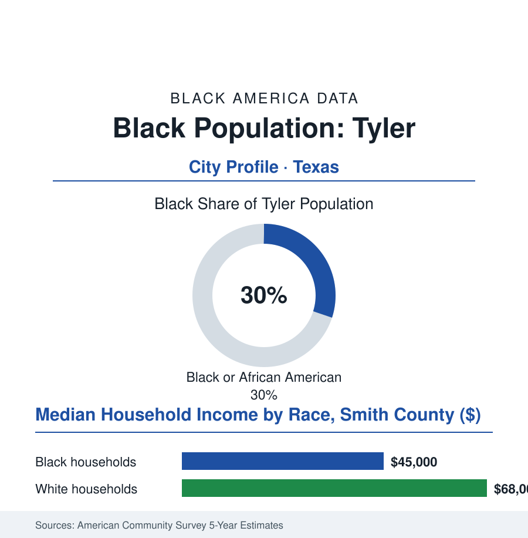

Black Cities
Black Tyler: 31,000 People in the Rose Capital
Tyler's Black community — nearly a third of the East Texas city — built its institutions between the rose fields and the oil patch, and now staffs one of Texas's great medical districts. The numbers.

Tyler's Black community numbers roughly 31,000 people — about 30% of the city's 105,000 residents — in the East Texas piney-woods city the brochures call the Rose Capital of America, where the flower fields and the oil money built a regional capital whose Black north side carries the standard Texas ledger of anchored institutions and audited patience. This article reads Tyler's numbers. Both local ledgers still count.
Roses, Oil, and the North Side
The founding economy was the region's double crop: the cotton of the Black Belt's western edge and, from the 1930s, the East Texas oilfield — the largest in the continental United States in its day — whose boomtown wages drew the workforce that made modern Tyler, the Black families of the field camps and the service economy settling the city's north side in the geography the era enforced. The rose industry arrived as the oil settled: the fields west of town, in their peak years, growing half the nation's rose bushes — the budding and field work substantially in Black and Mexican hands in the labor record, the festival's parade routing, in the era, past the neighborhoods whose workers had grafted the floats' flowers. The institutions rose in the north side's own ledger: the churches of the old neighborhood grids, Texas College — the Christian Methodist Episcopal school founded in Tyler in the 1890s, still open, still graduating the region's teachers and ministers in the HBCU file's small-school register — the funeral homes and the Black business row, the schools of the segregated system whose alumni associations now keep the archives. The civil-rights decades ran the East Texas course, slower and quieter than the Delta's and no less consequential in the record (the desegregation orders, the ward maps, the public accommodations' staged surrender), and the post-era economy sorted the region into its modern form: the oil's long twilight, the roses' mechanization, and the rise of the city's third engine — medicine.
The Medical City's Two Ledgers
Tyler's modern distinction in the regional data is its hospital district: a medical center of a scale a city three times its size would envy, drawing patients from the whole piney-woods region — and employing, in the workforce file's rows, thousands of the community's workers at every level from the environmental services rows to the nursing cohorts of the local colleges' pipelines, the health economy standing where the oil economy stood in the grandparents' data, with the same distribution question attached (the physician and executive rows of the medical district against its service rows, the pipeline programs of the recent record aimed at the gradient). The survey cuts give the balance sheet its shape: the Black household median in the mid forty-thousands against the high sixty-thousands beside it — respectable for the region, gapped in the standard proportion — the poverty rows of the north side beside the growth rows of the south side's subdivisions, the city's expansion running, like Waco's and the corridor's, away from the community that staffs its signature industry. The forward files are the region's: the medical district's expansions, the university branch campus's growth (UT Tyler's enrollment and its new medical school — East Texas's first — whose founding class the education file will read for its regional mission), the rose industry's heritage economy, the retiree in-migration the lakes country draws. The demographic rows project the city's slow diversification continuing — the Black share steady near a third, the Hispanic share climbing past it in the school enrollments, East Texas's old two-community map redrawing itself, as in city after city of the Texas file, into something its institutions were not built for and are learning, line by line, to serve.
Reading Tyler's Numbers
Thirty-one thousand people, thirty percent, one rose parade: Tyler is the cities file's East Texas chapter — the community that grafted the roses, pumped beside the oil, and now keeps the region's hospital running. The census counts the residents. The festival — whose flowers still pass the north side's churches on their way downtown — counts them too, whether the program says so or not. The roses, at least, have always known whose hands raised them.
More in Black Cities
Black Atlanta: Population, Distribution, and Growth of a Black Metropolis
Metro Atlanta holds more than two million Black residents — roughly one in three, second only to New York. The suburban distribution, migration history, and composition of Black Atlanta in the census data.
Black New York: The Largest Black Population in America
The New York metropolitan area holds about 3.4 million Black residents — more than any metro in the nation — and the city itself about two million. The census profile.
Black Washington: The District and the Metro
The Washington metro holds about 1.6 million Black residents, and the District itself — long a majority-Black city — now records a Black share near 41 percent. The census profile.
Source: U.S. Census Bureau, 2020 Census and American Community Survey 5-year estimates; City of Tyler and Smith County records; UT Health East Texas data.